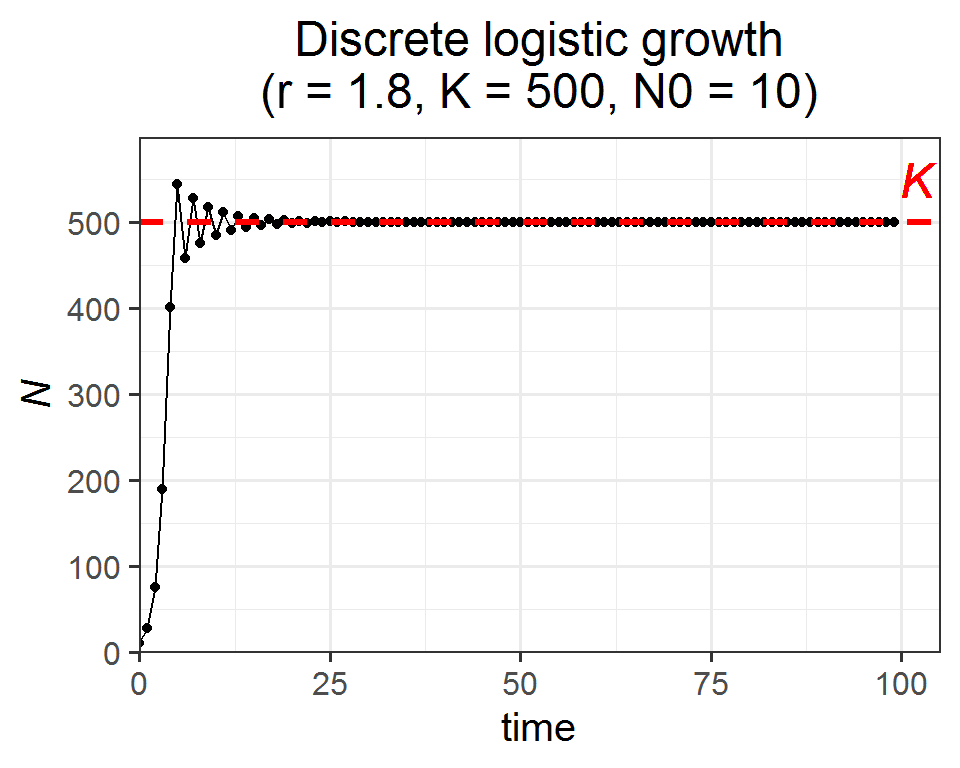
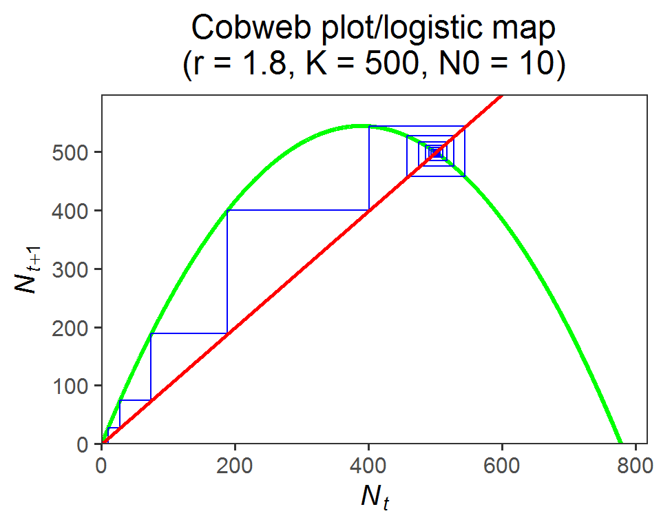

Week 4
Discrete exponential and logistic models
Lecture in a nutshell
- Discrete exponential growth (geometric growth):
- \(N_{t+1} = RN_{t}; N_{t+1} = R^{t}N_{0}\)
- Assumptions:
- Closed population
- Identical individuals
- Unlimited resources: critical rates are constant
- Discrete growth and census
- Pre-breeding census: \(N_{t+1} = (1 + \beta)(1-\delta) N_{t} = RN_{t}\)
- Cobweb plot: \(N_{t+1}\) vs. \(N_{t}\)
- Connection to the continuous model:\(N_{t+\Delta t} = (1+\beta \Delta t)(1-\delta \Delta t) N_{t}; \\\frac {dN}{dt} = \lim_{\Delta t \to 0} \frac {N(t+\Delta t)-N(t)}{\Delta t} = \lim_{\Delta t \to 0} (\beta N_{t}-\delta N_{t} - \beta \delta \Delta t) = (\beta-\delta)N_{t}\)
- Relationship between the intrinsic population growth rate r (which is a rate) and the finite rate of increase R (which is unitless): \(r = \frac {ln(R)}{h}\). \(h\) is the time interval between two population growth events. Note that R and cannot be directly manipulated; any math computations should be done on r (e.g., divide it by 10), and the modified r can later be converted back to R.
- Discrete logistic growth:
- \(N_{t+1} = N_{t} + rN_{t}(1-\frac {N_{t}}{K}) = N_{t}(1+r(1- \frac {N_{t}}{K})) = F_{(N_{t})}\)
- The equilibrium \(N^* = N_{t+1} = N_{t} \to N^* = 0, K\)
- Local stability analysis:
- A small displacement from the equilibrium point at time \(t\): \(\epsilon_{t} = N_{t} - N^{*}\)
- The behavior of this small displacement at next time step \(t+1\): \(\begin{aligned}\epsilon_{t+1}&=N_{t+1}-N^{*}\\&=F_{(N_{t+1})}-N^{*}\\&=F_{(N^{*}+\epsilon_{t})}-N^{*}\\&=F(N^*)+\epsilon_{t} \frac{dF}{dN}|_{N=N^*}+O_{(\epsilon_{t}^2)}-N^{*} \\&\approx \epsilon_{t}\frac{dF}{dN}|_{N = N^*}\\&=\lambda \epsilon\end{aligned}\)
- Stability criteria:
- \(\lambda > 1\): unstable (smoothly moving away from the equilibrium)
- \(0 < \lambda < 1\): stable (smoothly approaching the equilibrium)
- \(-1 < \lambda < 0\): stable (damped oscillations converging towards the equilibrium)
- \(\lambda < -1\): unstable (oscillations around the equilibrium)
- For the discrete logistic model:
- \(N^{*} = 0\) is unstable (\(\lambda = 1+r > 1\))
- \(K\) is stable only if \(0 < r < 2\) (\(\lambda = 1-r ~\&~ |\lambda| < 1\))
Lab demonstration
In this lab, we are going to model the discrete logistic population growth and visualize the system dynamics.
Part 1 - Model the discrete logistic population growth using for loops
library(tidyverse)
### (1) Set the parameters
r <- 1.8
K <- 500
N0 <- 10
time <- 100
### (2) Define the discrete logistic growth equation
log_fun <- function(r, N, K){N + r*N*(1-N/K)}
### (3) Use for loop to iterate over the time sequence
pop_size <- numeric(time)
pop_size[1] <- N0
for (i in 2:time) {pop_size[i] <- log_fun(r = r, N = pop_size[i - 1], K = K)}
pop_data <- pop_size %>%
as.data.frame() %>%
rename(., pop_size = `.`) %>%
mutate(time = 0:(time-1)) %>%
relocate(time)
head(pop_data)## time pop_size
## 1 0 10.00000
## 2 1 27.64000
## 3 2 74.64171
## 4 3 188.93980
## 5 4 400.51775
## 6 5 543.95762Part 2. Visualize the population dynamics:
### Population trajectory
ggplot(pop_data, aes(x = time, y = pop_size)) +
geom_point() +
geom_line() +
geom_hline(yintercept = K, color = "red", size = 1.2, linetype = "dashed") +
geom_text(x = time*1.02, y = K+50, label = "italic(K)", color = "red", size = 6.5, parse = T) +
labs(y = expression(italic(N)), title = paste0("Discrete logistic growth", "\n", "(r = ", r, ", K = ", K, ", N0 = ", N0, ")")) +
scale_x_continuous(limits = c(0, time*1.05), expand = c(0, 0)) +
scale_y_continuous(limits = c(0, max(pop_size)*1.1), expand = c(0, 0)) +
theme_bw(base_size = 15) +
theme(plot.title = element_text(hjust = 0.5))
### Cobweb plot/logistic map
cobweb_data <- data.frame(Nt = rep(pop_size[-time], each = 2),
Nt1 = c(0, rep(pop_size[-1], each = 2)[-length(rep(pop_size[-1], each = 2))]))
logistic_map <- data.frame(Nt = seq(0, (r+1)/r*K, by = 0.1)) %>%
mutate(Nt1 = Nt + r*Nt*(1-Nt/K))
ggplot() +
geom_line(data = logistic_map, aes(x = Nt, y = Nt1), color = "green", size = 1.2) +
geom_path(data = cobweb_data, aes(x = Nt, y = Nt1), color = "blue", size = 0.5) +
geom_abline(slope = 1, intercept = 0, color = "red", size = 1) +
labs(x = expression(italic(N[t])),
y = expression(italic(N[t+1])),
title = paste0("Cobweb plot/logistic map", "\n", "(r = ", r, ", K = ", K, ", N0 = ", N0, ")")) +
scale_x_continuous(limits = c(0, (r+1)/r*K*1.05), expand = c(0, 0)) +
scale_y_continuous(limits = c(0, max(pop_size)*1.1), expand = c(0, 0)) +
theme_bw(base_size = 15) +
theme(plot.title = element_text(hjust = 0.5),
panel.grid = element_blank()) *The name “logistic map” comes from the fact that it maps the population size at one time step Nt to the value at the next time step Nt+1.
Here is a shiny app for the discrete logistic growth model. Feel free to play around with different inputs and see how the system dynamics change accordingly.